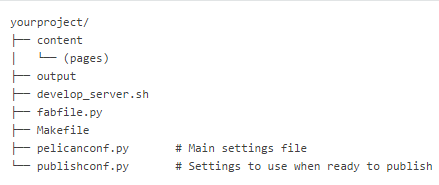
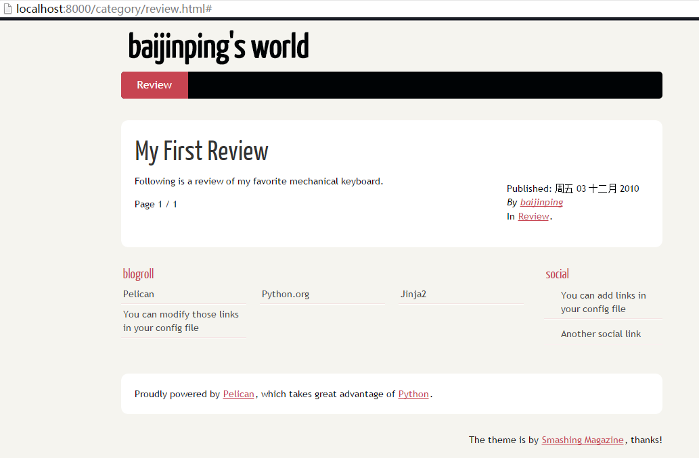

Pelican全攻略
Pelican是一套使用Python开发的开源静态网页生成工具。Pelican项目主页http://www.getpelican.com/。
一、安装Pelican
使用pip或者easy_install都可以。要下载最新的，还是到Pelican的github主页上下载吧：https://github.com/getpelican
安装过程中，还有一大堆的python库会依赖下载：
- feedgenerator, to generate the Atom feeds
- jinja2, for templating support
- pygments, for syntax highlighting
- docutils, for supporting reStructuredText as an input format
- pytz, for timezone definitions
- blinker, an object-to-object and broadcast signaling system
- unidecode, for ASCII transliterations of Unicode text
- six, for Python 2 and 3 compatibility utilities
- MarkupSafe, for a markup safe string implementation
- python-dateutil, to read the date metadata
二、快速开始
安装完Pelican之后，可以在终端命令中找到pelican-quickstart。假设当前的目录是/home/mysite/，在该目录下运行pelican-quickstart命令，在经过n个询问的问题之后（也可以直接用默认的），Pelican就开始创建生成静态页面所需的文件了。
生成后的目录树如下：

首先在content下创建一个测试文章（如下），保存为keyboard-review.md。
Title: My First Review
Date: 2010-12-03 10:20
Category: Review
Following is a review of my favorite mechanical keyboard.
回到/home/mysite目录，运行pelican content命令，Pelican就将页面生成到output目录下了。 进入output目录，启动python的内置http服务器：
python -m SimpleHTTPServer
访问http://localhost:8000/就可以看到生成好的网站了！ 
三、Pelican配置简介
在前边生成的文件目录下，有两个配置文件pelicanconf.py和publishconf.py。其中主要是pelicanconf.py。可以这么认为，Pelican中可配置的值大部分已经有默认值，而用户可以在pelicanconf.py中对配置进行修改从而覆盖原来的值。
推荐在pelicanconf.py中配置绝大部分的配置项，在需要发布时，将发布版本的配置放到publishconf.py中（如生成发布版本时才需要SITEURL，DISQUS_SITENAME之类的配置）。publishconf.py的配置在生成发布版本时会覆盖掉pelicanconf.py中的相应配置。
四、开始编写文章
Pelican中使用‘articles’表示每一篇文章，每篇文章都会有自己的发布日期。‘articles’是易变的，经常会编辑的内容。 而‘pages’则表示不经常编辑改变的内容，如‘About’页，‘Contact’页。
每种形式的文章都在某些特定的地方（通常是头部）提供文章的元数据，如标题（title），发布日期（date），更新日期（modified），分类（category），标签（tags）等。
Articles
Pelican中支持多种格式的源文章。包括reStructuredText格式（.rst后缀），Markdown格式等（.md,.markdown,.mkd,.mdown后缀都行），甚至包括Html格式（.html,.htm）。还有更多格式可以通过Pelican插件http://github.com/getpelican/pelican-plugins进行添加。
下面是几种常用格式的范例文章： * reStructuredText:
My super title
##############
:date: 2010-10-03 10:20
:modified: 2010-10-04 18:40
:tags: thats, awesome
:category: yeah
:slug: my-super-post
:authors: Alexis Metaireau, Conan Doyle
:summary: Short version for index and feeds
- Markdown:
Title: My super title
Date: 2010-12-03 10:20
Modified: 2010-12-05 19:30
Category: Python
Tags: pelican, publishing
Slug: my-super-post
Authors: Alexis Metaireau, Conan Doyle
Summary: Short version for index and feeds
This is the content of my super blog post.
- HTML:
<html>
<head>
<title>My super title</title>
<meta name="tags" content="thats, awesome" />
<meta name="date" content="2012-07-09 22:28" />
<meta name="modified" content="2012-07-10 20:14" />
<meta name="category" content="yeah" />
<meta name="authors" content="Alexis Métaireau, Conan Doyle" />
<meta name="summary" content="Short version for index and feeds" />
</head>
<body>
This is the content of my super blog post.
</body>
</html>
Pages
如果在content目录下创建了pages目录，这个目录下的页面都是用来作为顶部导航栏的静态存在。一般用于About，Contact之类的页面。
文章元数据(File Metadata)追加内容
-
添加Status:hidden，可以在目录中隐藏指向该文章页面的链接。实测却不知为何，添加该元数据之后，生成该文章时居然报错了，当然最终目的页达到了——报错的页面都不会显示在目录中。
-
添加Status:draft，可以使该文章不出现在任何标签页和分类页的列表中，算是用于页面的简单隐藏。设置这个属性的html将会在单独的output/drafts目录下。 比如文章刚刚出了草稿，还不能发表，那就设置这个属性，单独将文章链接发给同事评价下吧。
五、文章中的链接
filename链接-指向其他文章
如果需要创建指向某资源（其他页面，图片等）的链接，需要遵循语法：{filename}path/to/file
如果有如下的目录结构，而article1.rst和article2.md需要指向对方。
website/
├── content
│ ├── category/
│ │ └── article1.rst
│ ├── article2.md
│ └── pages
│ └── about.md
└── pelican.conf.py
在articles1.rst的正文中，指向articles2.md的链接格式应该是：
`指向articles2的链接 <{filename}../articles2.md>`_
在articles2.md的正文中，指向articles1.rst的链接格式应该是：
[指向articles1的链接]({filename}category/articles1.rst)
filename链接-指向资源文件
如果要在文章中添加图片，可以创建content/images目录，图片直接放进去就可以了。默认配置下，images目录会自动拷贝到output中。但如果要放到其他的文件夹中，则需要在配置STATIC_PATHS中添加相应的目录。 使用在markdown中创建链接的格式，将目标文件改为图片文件就可以了。如果要让图片直接在文章中显示，则要在前面加上感叹号‘！’。

指向其他类型的文件都一样，点击后可以在浏览器中打开。
attach链接-附件链接
除了使用{filename}作为前缀的链接以外，Pelican中还有另一种链接——{attach}。格式同{filename}，只是{}中的名字不同了。 attach，顾名思义就是附件的意思。attach和filename最大的区别在于，使用attach指向的文件会在生成后被放到和源文章的相同目录下，概念上就像源文章的附件一样。
attach链接是不推荐使用的。
关于attach要知道几点（链接文件表示被源文章attach的文件）： 1. 不管在content中链接文件和源文章的相对路径是怎样的，如果正常生成到了output中，那么链接文件至少是与源文章的html文件在同一目录下（如果在content时，链接文件就在源文章的目录内，如子目录，那么这个子目录会保留）； 2. 由于被attach后，静态文件的路径会发生改变，因此一个要求链接文件只能同时被一个源文章链接。如果一个静态文件被多个源文章链接（有大于等于一个attach链接），那么只有第一个attach链接会生效，其他的链接都不会被正常转义（怎么确定第一个是哪一个？都让你别这么用了）； 3. 能够正确使用attach的情境有两个： 1. 确保对链接文件的attach链接都来自同一个文件； 2. 所有发出attach链接的源文章都在同一个目录下。
tag链接和category链接-指向标签页和分类页
最终的页面中会为每个tag和category生成单独的页，使用{tag}path/to/file和{category}path/to/file,可以创建指向标签页和分类页的链接。
向后兼容-|竖线|
为了保持向后兼容，Pelican暂时保留了使用竖线|作为链接符号的语法。目前这种语法已经不推荐使用。 之所以更换了语法，是为了避免竖线同Markdown插件和rst指令相冲突。使用{花括号}的语法是目前推荐的。
六、设置主题
从https://github.com/getpelican/pelican-themes可以获得几十个Pelican主题。
下载到本地之后，只要配置THEME为主题所在路径就可以了。
当然也可以自己创建主题， http://docs.getpelican.com/en/3.5.0/themes.html。
七、Pelican的缓存机制
Pelican在生成时会使用缓存策略，以提高生成网页的速度。这个缓存策略其实就是指，生成过程中会将源文章文件的一些数据放到缓存中，方便下一次生成过程判断源文章文件是否被更新了，生成过程只更新那些被更新了的articles和pages。
当Pelican获取到一个源文章文件（下文简称文章）时，将（‘处理该源文章’指的是开始生成该源文章文件对应的html页面）：
- 如果
LOAD_CONTENT_CACHE=True（默认），就尝试从上次生成缓存文件（保存路径配置在CACHE_PATH）中获取这个文章的hash值或更新时间值，并与当前的源文章文件的hash值或更新时间值进行比较； - 新旧文章的比较方法由
CHECK_MODIFIED_METHOD配置。 ->默认值为‘mtime’，即比较元数据更新时间- 如果设置为hashlib模块中的某个hash函数（如‘md5’），则比较文件的hash值；
- 如果设置成其他值，或者无法获取到该文章在缓存中的任何数据，则处理该文章；
- 如果比较后该文章被认为是未更新的，那么就从缓存中读取对应的数据进行生成。不处理该文章；
- 如果比较后该文章被认为是有更新的，那么处理该文章。如果
CACHE_CONTENT=True，则将其添加到缓存文件中。
几点补充：
CONTENT_CACHING_LAYER可以设置被缓存的数据内容。默认值为’reader’，表示整个源文章文件和元数据。可选值为’generator’，缓存的是经过处理后的数据（下一次处理起来会更快）。但是不推荐配置为’generator’，虽然速度会快一点，但可能会与一些插件或WITH_FUTURE_DATES的设置发生冲突，产生一些奇怪的问题；CHECK_MODIFIED_METHOD默认比较’mtime’，这种方式的速度比使用hash进行比较更快。但要考虑到元数据更新时间值在有些时候会丢失；- 缓存文件通过Python的pickles进行保存，因此在更换Python版本后，需要移除缓存文件重新进行生成（pickles格式在不同版本的Python中可能不同）。另外，如果
GZIP_CACHE更改的话，也要移除缓存文件重新进行生成； - 尽管在生成过程中缓存了源文章，但是生成目录下的html文件始终会更新（不管源文章是否有更新）。提交时可以使用
—checksum表示检查校验和。
八、Pelican插件简介
Pelican从3.0开始支持插件。使用插件能够在不修改Pelican的情况下增加更多功能。 Pelican的所有插件都在这里：https://github.com/getpelican/pelican-plugins，该页面下方还有各个插件的说明。
使用插件有两种形式：
-
一是在当前python环境中可以直接import得到的，这种情况下使用
PLUGINS参数进行配置。 这种配置也有两种形式（一起用也是可以的）： 1-> PLUGINS = [‘package.myplugin’,] 2-> from package import myplugin 2->PLUGINS = [myplugin,] -
二是当插件代码无法直接import时，直接指定插件的路径，这种情况下使用
PLUGIN_PATHS参数进行配置。 -> PLUGIN_PATHS = [‘plugins’, ‘/srv/pelican/plugins’] -> PLUGINS = [‘asserts’, ‘liquid_tags’, ‘sitemap’] 在查找时就会在/srv/pelican/plugins/目录下查找。我想其机制应该时将那个路径添加到sys.path里边，然后尝试import。
在生成页面的时候，pelican主程序会与各个插件进行通信，这里http://docs.getpelican.com/en/3.5.0/plugins.html#list-of-signals定义了通信的数据格式。如果需要编写插件，可以深入看看，这里不展开。
九、Pelican配置项详细说明
格式比较复杂，整理中